Tag 2 – „Stellenbosch I“
By Evita Bley
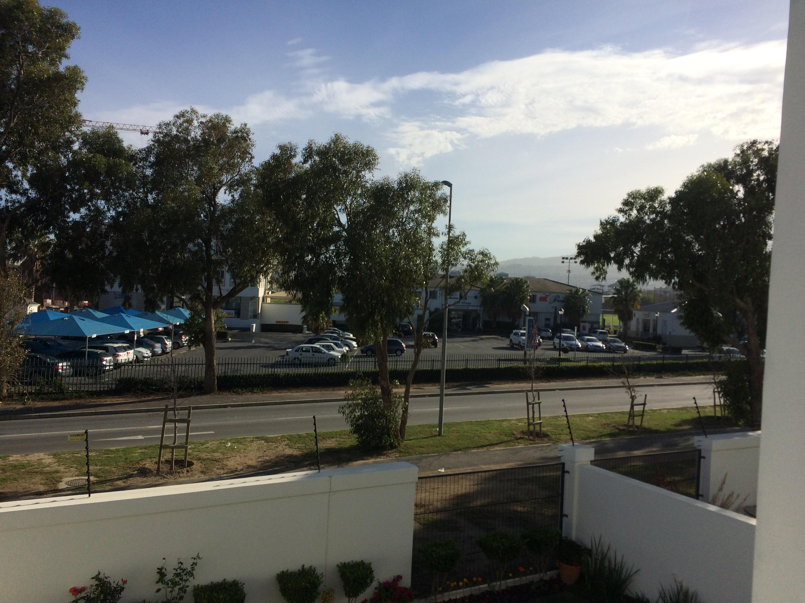
Der Schlaf war nötig, 8:30 Uhr bin ich wieder wach, weil es ein bisschen zu warm im Zimmer ist. Draußen sind bereits 17 Grad und die Sonne scheint, als hätte sie keine anderen Hobbys. Daily Selfie wird auf die erste Zigarette auf dem Balkon gelegt. Schließlich will ich wissen, wie braun ich werde und wie erholt ich am Ende aussehe. Ich bin gespannt. Nach einem kleinen „Tee-Frühstück“ und ein bisschen vom „alten“ Käsebrötchen aus Deutschland sind wir mit Jeanine direkt losgefahren nach Stellenbosch. Auf der linken Seite fahren ist immer noch irgendwie merkwürdig, aber ich werde mich schon dran gewöhnen (müssen).
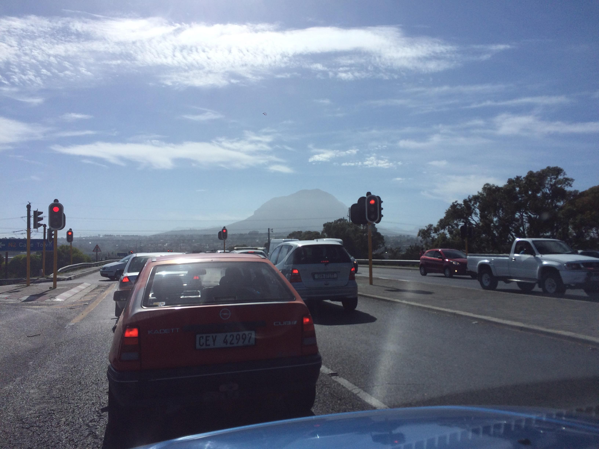
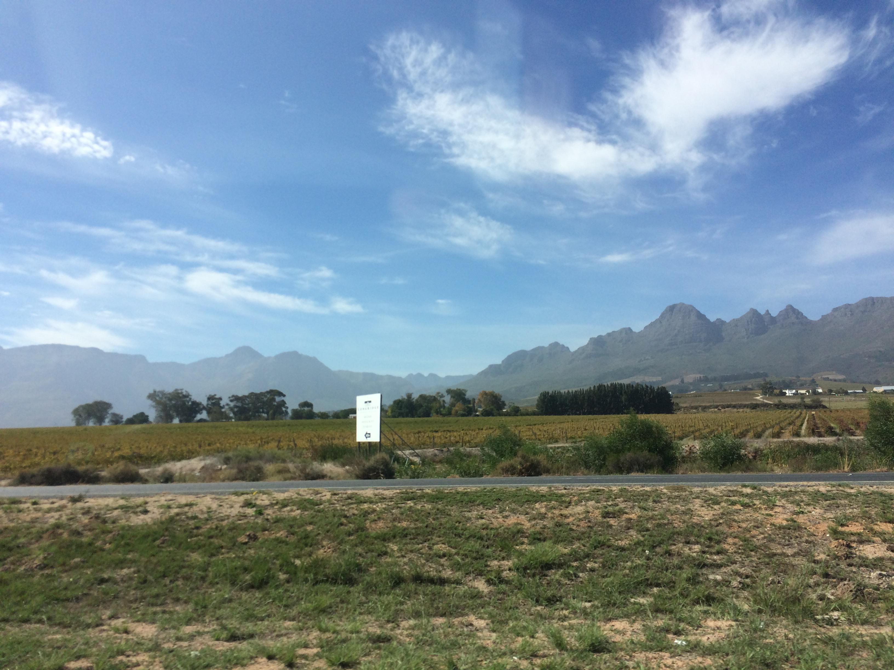
Allein die Aussicht aus dem Auto ist unfassbar geil. Ich meine, wann fährt man in Deutschland schon auf einer Landstraße mit wahnsinnig vielen Bäumen in der Mitte und an der Seite und dahinter dann immer diese riesen Berge, die irgendjemand irgendwann da einfach hingesetzt hat und links ein Stückchen weiter weg erahnt man das Meer ab und zu.
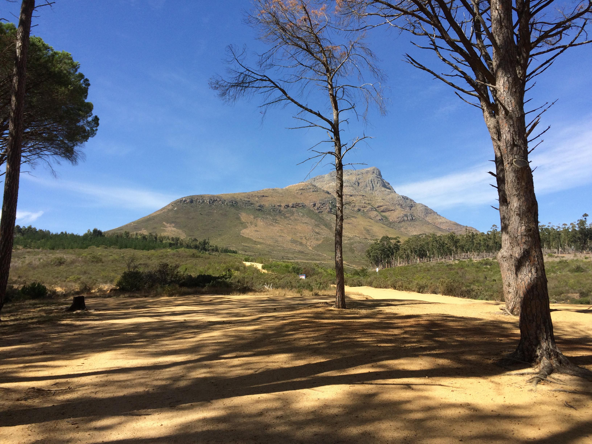
In Stellenbosch hat uns Jeanine dann erst mal ihren Campus gezeigt. Eigentlich ist fast ganz Stellenbosch ein großer Campus. Hinter ihrem Arbeitsplatz ist direkt ein hoher Berg, er heißt „Coetzenberg“ … auf den kann man ein Stück raufgehen und man sieht ganz Stellenbosch unter sich.
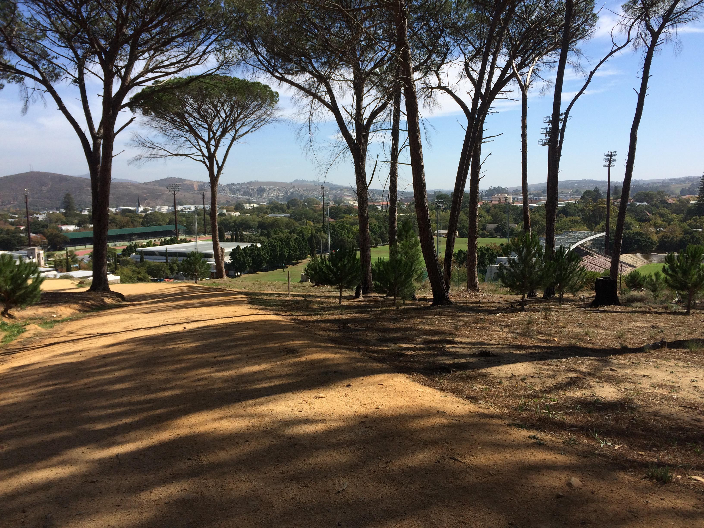
Bis ganz nach oben werden wir wohl nicht mehr gehen, das ist doch ein halber Tagesmarsch bis dahin. Dann wieder runter und rein in die Stadt.
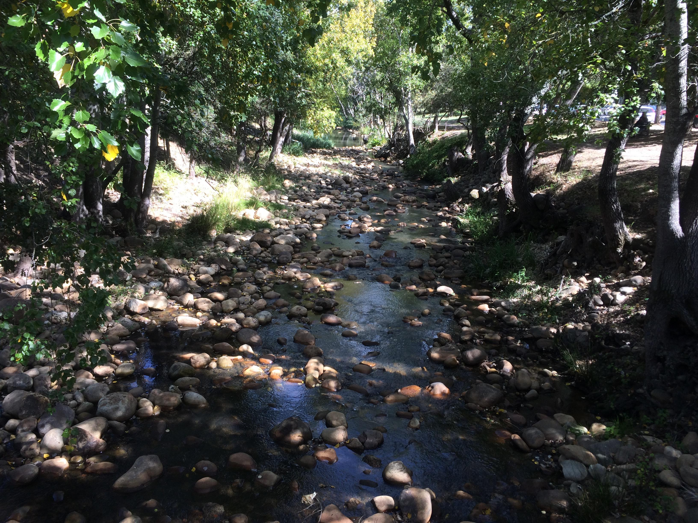
Für mich wirkte es mehr wie ein großes Dorf mit jeder Menge Souvenirshops, aber nicht wie in normalen Touristikgebieten, sondern wirklich liebevoll gestaltete kleine Läden mit lokalen Dingen darin. Nach ein bisschen Shopping (- Shopping ist für mich: Nur gucken, nichts kaufen -) sind wir in ein nettes „Café“ gegangen, eigentlich mehr eine Bar namens „Armory“ mit dem Untertitel „Whisky, Tango, Foxtrott“ und sie haben Pizza namens „Adolf“ da …
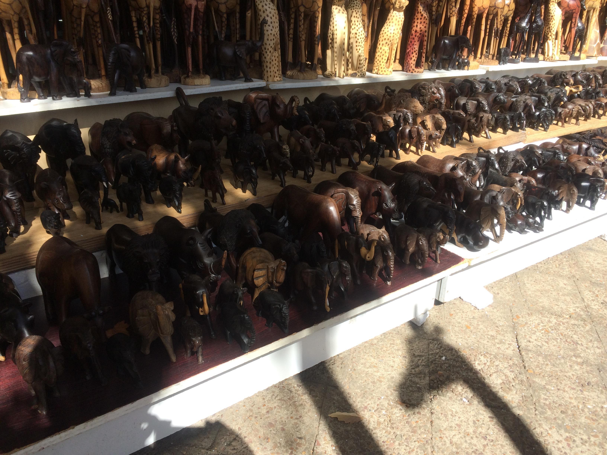
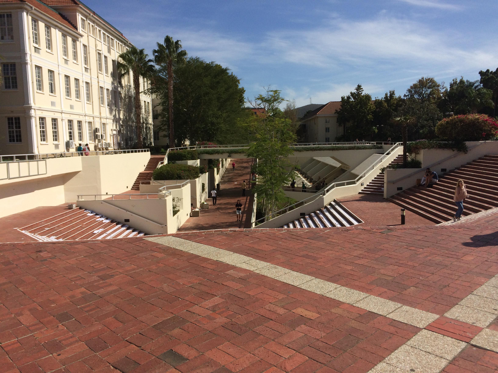
Danach sind wir dann zu einem anderen Teil des Campus gegangen, der quasi der Hauptcampus ist. Dort ist es wirklich nett, lauter Häuser, in denen wirklich wichtige Dinge studiert werden :) Ich bin da nicht so firm drin, was das Studieren angeht, aber da lässt es sich sicher aushalten. An ein paar wie ich finde „teuren Gartenhäusern“ vorbei und schon steht man im „Botanischen Garten“ des Campus.
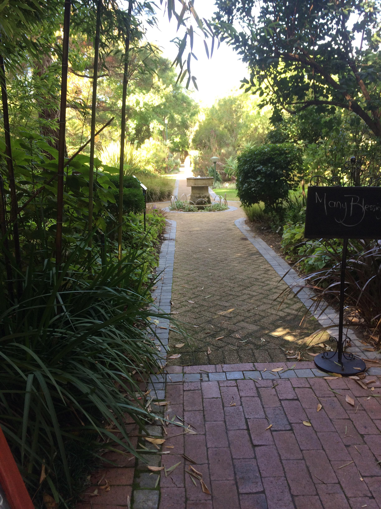
Darin ein Haufen Bäume und Blumen, die kein Mensch kennt, also zumindest ich nicht. Und ganz hinten dann ein nettes Restaurant, wo es wirklich gute Burger gibt. Also erst mal Mittagessen und ein wenig die Atmosphäre genießen. Der Burger war wirklich gut! Aber Schillerburger in Berlin ist immer noch meine Nummer 1.
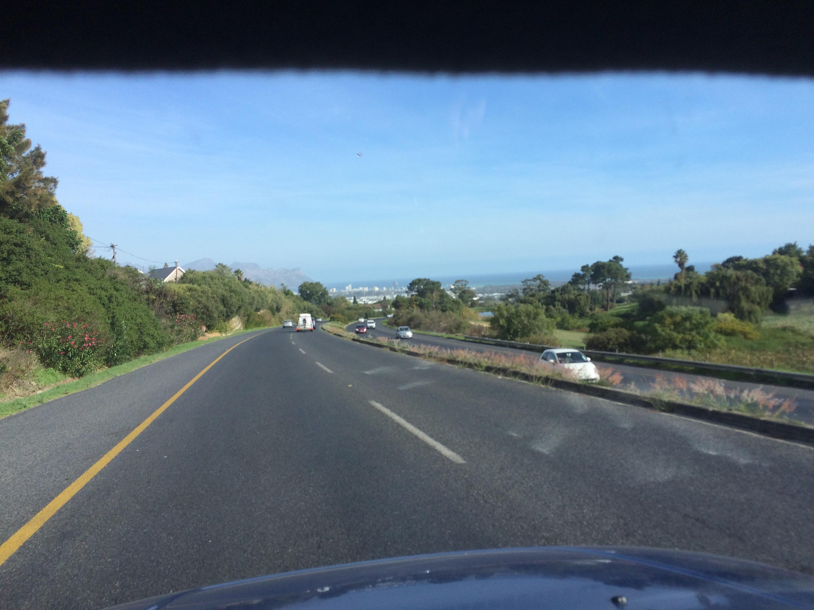
Danach wieder zurück zum Auto, allein der Weg dahin ist einfach ein wunderschöner Spaziergang durch eine Stadt, die wie ein Dorf ist und wo man wahrscheinlich gut entschleunigen und fokussieren kann. Die Aussicht auf dem Rückweg mit dem Auto ist noch geiler, weil man diesmal wirklich aufs Meer zufährt und einen schönen Blick von etwas weiter oben hat. Ich wollte ja gestern eigentlich schon endlich das Meer sehen, aber es war doch etwas bewölkt und nicht das beste Wetter für „das erste Mal“. Wir sind also direkt zum Strand gefahren und ich konnte endlich „Wasser gucken“.
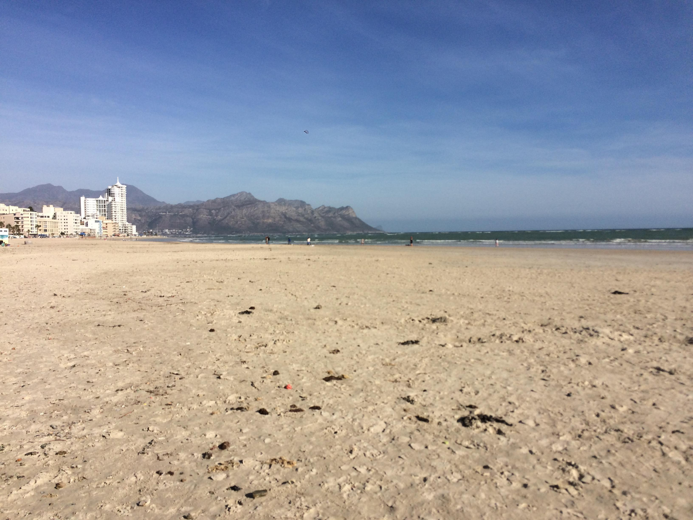
Ich liebe das und auch hier musste ich mir wieder ein Tränken verdrücken … diese blöde Melancholie :D Nach einem kleinen Spaziergang mit diesen wunderschönen Blicken auf Berge direkt am Meer, sind wir wieder nach Hause gefahren. Das Ding ist, dieser Strand und dieser Blick ist 25 Minuten zu Fuß von Jeanines Haus entfernt. Wie geil ist das denn bitte?! Auch nach Stellenbosch fährt man nur 20 Minuten mit dem Auto. Zu Hause angekommen brauchte ich dann erst mal einen kleinen „Mittagsschlaf“ (es war so gegen 18 Uhr). Ein bisschen habe ich immer noch am Flug zu knabbern. Sewis spielte einen Egoshooter und ich setzte mich daneben und hatte mein „Live Lets Play“. Danach sprachen wir über Spiele, die wir mögen und wir kamen auf „Brothers“ zu sprechen. Sewis sagte, „this one we have here, do you want to play?“… Ja so habe ich dann eine halbe Stunde „Brothers“ gespielt, Lets Plays und selber spielen macht halt schon einen Unterschied. Danach gab es lecker Bobotie mit Reis. Aber es hat sogar mir geschmeckt, obwohl es relativ scharf war und das heißt einiges. Danach wieder ein bisschen “Master Chef Australia” und nette Gespräche und dann zumindest den Anfang von „Inside Out“ gucken. Dazu gibt es natürlich lecker Weinchen. Hier gibt es so viele Weinplantagen (heißt das bei Wein so, wenn sie nicht am Berg sind?), da kommt man nicht drumherum, einen Haufen Wein zu trinken. Und der ist echt lecker hier :) So geht auch Tag 2 zu Ende und morgen ist ein neuer Tag (von 21), um neue Dinge zu sehen und zu lernen.
P.S.: Sogar mein Englisch ist nach einem Tag schon viiiiiel besser geworden! Ich bin ein bisschen stolz auf mich :D